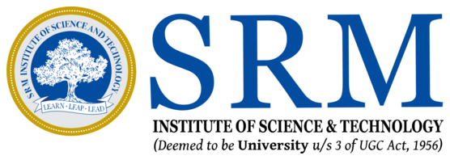
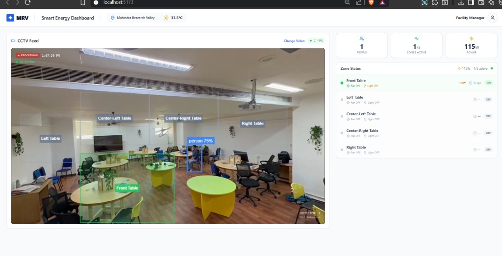

TMT STEEL ANALYZER ↗
Computer vision pipeline for rib and ring tests across 500+ samples.
COMPUTER VISIONPYTHON / OPENCV
COMPUTER SCIENCE ENGINEER / SPECIALIZATION IN AI + ML
I make models learn,
agents act, and data speak.
Systems, experiments and ideas built where intelligent machines meet real-world signals.
Computer vision pipeline for rib and ring tests across 500+ samples.

Deep learning and feature-level explanations for media forensics.
Offline enterprise steel knowledge base, TDC/MTC specs & conversational AI.

Real-time CCTV occupancy tracking and automated appliance energy control.
From industrial camera streams to enterprise offline AI platforms — high-impact engineering delivered in production.
Engineered an industrial computer vision pipeline for automated dimensional and surface testing of TMT steel rebar across 500+ production test samples.
Architected a real-time CCTV edge intelligence platform for anonymous occupant tracking and intelligent automated actuation of facility energy loads across 5 zones.
Designed and deployed DIMEX, a 100% offline-capable enterprise steel intelligence platform centralizing Technical Delivery Conditions (TDC) and Mill Test Certificates (MTC) across 75+ steel grades.
A multi-disciplinary stack engineered for production AI, high-throughput computer vision, and robust enterprise systems.
Academic excellence in Computer Science & AI, accompanied by industry certifications.
SPECIALIZATION IN ARTIFICIAL INTELLIGENCE & MACHINE LEARNING
SRM INSTITUTE OF SCIENCE & TECHNOLOGY — KATTANKULATHUR, CHENNAI